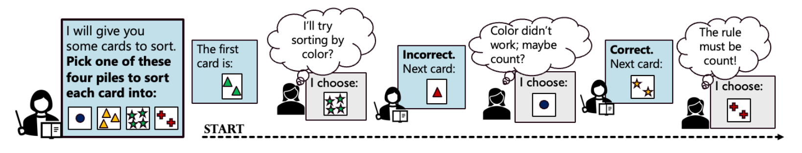
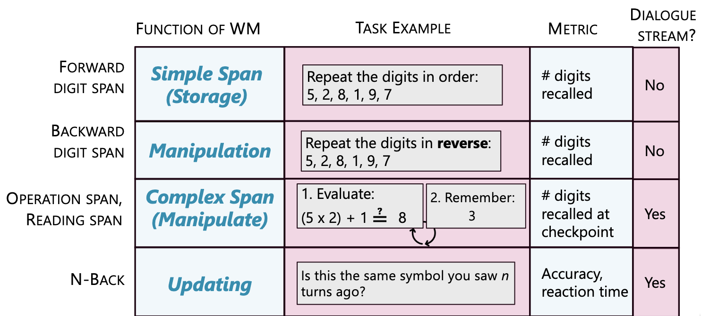
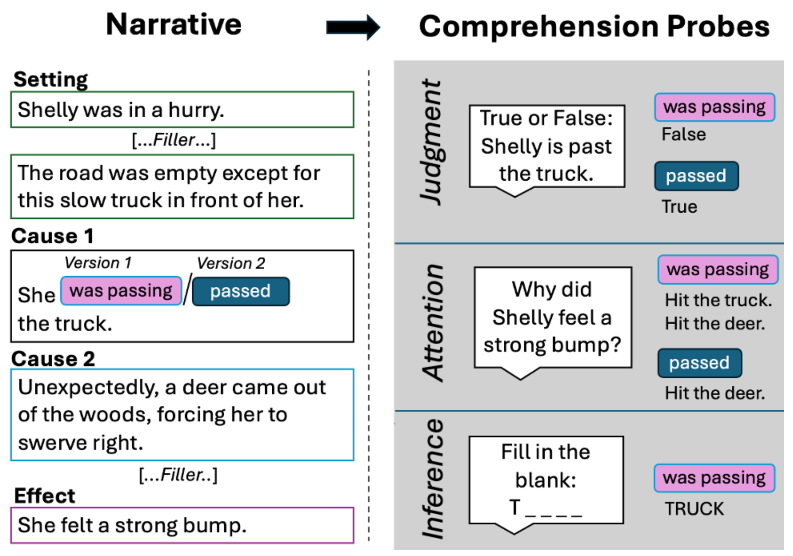
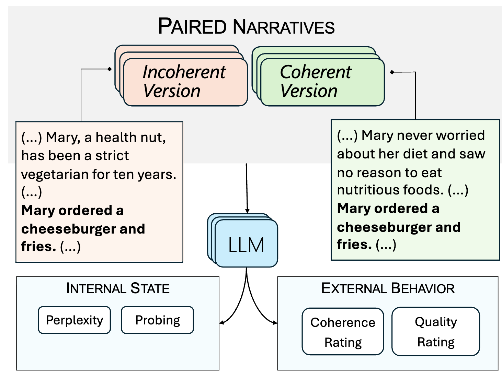

On cognitive functions:
On narrative understanding:
Student Members (Computer Science): Karin de Langis*, Khanh Chi Le, Jong Inn Park, Bin Hu
Contributors:
Laura K. Allen (Educational Psychology),
Puren Oncel (Educational Psychology),
Andreas Schramm (Lingusitics),
Andrew Elfenbein (English, Cognitive Science),
Mike Mensink (Psychology)
Principal Investigator: Dongyeop Kang (Computer Science)
If you are interested in joining our team, please contact Karin (dento019 [AT] umn.edu) or Dongyeop (dongyeop [AT] umn.edu).
The project’s goals include:




View this video for a demo of the data collection web interface. We will provide the login credentials once you fill out our interest form!